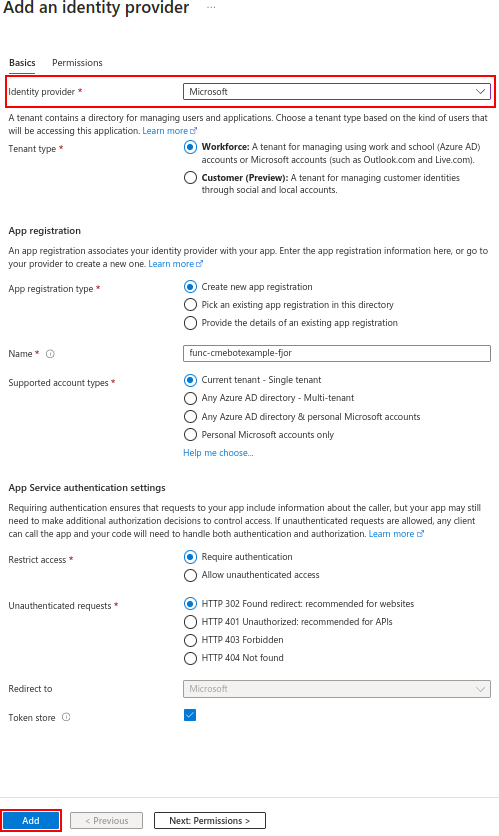

Following up the theme of my previous article From Static to Stellar: Hosting Hugo sites in Azure Storage containers & Azure CDN, I will show you how to map a root domain to an Azure CDN endpoint.
At the time of this writing, Azure doesn’t support root domains using Azure CDN Managed certificates. The Azure documentation gives us two options to map the root domain, you can use your own certificate (stored in Azure Key vault) or you can purchase a new certificate through Key vault.
Today, I will show you how to automate the creation, signing and the renewal of free SSL certificates from Let’s encrypt while storing them in your Azure KeyVault. To acomplish this, I will be implementing the Key Vault Acmebot.
What is ACME?
ACME, or Automated Certificate Management Environment, is a protocol that makes it possible to automate time-consuming processes, such as CSR generation, domain ownership verification, certificate issuance, installation and renewal of certificates, all without human interaction.
ACME is primarily used to obtain domain validated (DV) certificates. This is because DV certificates do not require advanced verification. Only the existence of the domain is validated.
Key Vault Acmebot
Key Vault Acmebot is a project created by Tatsuro Shibamura, with the purpose of providing secure and centralized management of ACME certificates alongside automation.
It runs as an Azure Function using the consumption plan, so you only pay for when it is used (if you surpassed the monthly free grant of 1 million requests and 400,000 GB-s of resource consumption).
As the project’s wiki indicates, the cost of running the bot is low, but it can vary depending on the amount of certificates that you manage. Here’s a breakdown of the proximate costs:
- Azure Functions: < $0.01
- Storage Account: $0.1 ~ $0.2
- Application Insights: $0.01 ~ $0.02
The acmebot acts as an ACME Client and automates the domain validation. The client reaches out to the ACME provider (Let’s Encrypt) using the ACME protocol, and requests an SSL certificate for the domain. The provider, in turn, asks for proof that you own the domain.
Domain Validation
Let’s Encrypt identifies the server administrator by public key. The first time the agent software interacts with Let’s Encrypt, it generates a new key pair and proves to the Let’s Encrypt CA that the server controls one or more domains. This is similar to the traditional CA process of creating an account and adding domains to that account. To kick off the process, the agent asks the Let’s Encrypt CA what it needs to do in order to prove that it controls the domain, e.g. example.com.
The Let’s Encrypt CA will look at the domain name being requested and issue one or more sets of challenges.
These are different ways that the agent can prove control of the domain. For example, the CA might give the agent a choice of either:
- Provisioning a DNS record under
example.com, or - Provisioning an HTTP resource under a well-known URI on
http://example.com/
Along with the challenges, the Let’s Encrypt CA also provides a nonce that the agent must sign with its private key pair to prove that it controls the key pair.
The agent software completes one of the provided sets of challenges. Let’s say it is able to accomplish the first task above. To prove that you control www.example.com, you create a TXT record at _acme-challenge.www.example.com with a “digest value” as specified by ACME (your ACME client should take care of creating this digest value for you). When the TXT record is ready, your ACME client informs the ACME server (Let’s Encrypt) that the domain is ready for validation. The ACME server looks up the TXT record, compares it to the expected digest value, and if the result is correct, considers your account authorized to issue for www.example.com. Your client can set up this TXT record (or a CNAME) without interfering with normal website operations.
Deployment
To deploy Keyvault Acmebot, access the project’s repository at https://github.com/shibayan/keyvault-acmebot and click on the “Deploy to Azure” button.
This will deploy a remote ARM template that is composed of these 7 resources:
- Storage account
- App Service plan
- Log Analytics workspace
- Application Insights
- App Service
- Key vault
- Role assignments
Let’s fill the required details:
- Resource group: I recommend creating a new resource group to facilitate the management of your resources. In this example, I will create it with the name
rg-websiteexample-prod-01. - App Name Prefix: Include a prefix for all the resources that will be deployed.
- Mail Address: It’s a requirement of the ACME protocol.
- Acme Endpoint: In this article I’m using “Let’s Encrypt”, but you can choose a different certificate provider.
- Create With Key Vault: Choose “true” if you wish to create a new Key Vault for certificate storage. Alternatively, select “false” and provide a value for the “Key Vault Base URL” option.
Click on Review + create and navigate to the newly created resource group.
Here, the function app serves as the engine behind the bot, also driving and managing the rest of the resources.
Inside the function app we can see all the functions that power the bot:
Setting up permissions
The Azure RBAC roles assigned to this managed identity (the function app) doesn’t allow us to create access policies for our key vault, wich are needed to give the function app access to it, that’s why we need to change the access configuration of our key vault.
Azure role-based access control: Azure RBAC is an authorization system built on ARM that provides fine-grained access management of Azure resources to grant access at a specific scope level by assigning appropriate Azure roles.
Vault access policy: A Key Vault access policy determines whether a given security principal, namely a user, application or user group, can perform different operations on keys, secrets and certificates.
Navigate to the function app, under the left navigation pane select Identity and copy the Object (principal) ID.
Now, go to your key vault, select Access configuration from the menu and change the permission model by selecting Vault access policy. Then, click on Apply.
Let’s create a new policy that will allow our function app to access our key vault.
Select Access Policies from the left navigation pane, and then click on Create.
From the drop-down list select the “Key, Secret, & Certificate Management” template.
You can adjust permissions at a granular level to match your organization’s needs, as long as they don’t revoke the permissions necessary to use the bot.
After configuring the permissions, click on Next.
On the “Principal” tab, paste the Object (principal) ID of the function app on the search bar, select the resource, and click on Next.
Create the resource on the “Review + create” tab.
As a result, the function app, will be able to access the key vault to create and delete certificates. We give the function permissions to delete the certificates so that its able to renew them 30 days before their expiration.
Now we need to setup permissions to access our function app dashboard. Since the dashboard is accessible from the internet by visiting a URL, we need to provide some type of authentication to restrict the access to specific users. To do so, navigate to the Function app resource page and select Authentication from the navigation pane, then, click on Add identity provider.
Select an identity provider from the drop-down list, for this tutorial I will use Microsoft. We can use the default options provided in this window.

Now you can access the function app Dashboard using your Azure AD (or Microsoft Entra ID) Credentials.
Creating our certificate
To access the acmebot dashboard, you need to visit the URL provided in the Overview pane of your function app.
On the dashboard, an alert indicating the failure of the GetCertificates_Orchestrator fuction is expected to appear. This occurs because we haven’t established communication between the DNS provider and the bot. This will be our next task.
DNS Configuration
Acmebot only supports the following DNS providers:
- Amazon Route 53
- Azure DNS
- Azure Private DNS
- Cloudflare
- DNS Made Easy
- Gandi LiveDNS
- GoDaddy
- Google Cloud DNS
- TransIP DNS
If your DNS provider is not on the list, you can implement your own API following the steps provided in the project’s wiki.
Another option available is migrating from your DNS provider to Azure DNS. In this tutorial, I will migrate my domain from Namecheap to Azure DNS.
Let’s begin by creating a DNS zone. Search for “DNS zones” in the azure marketplace and create the resource. Select an existing resource group or create a new one. Under “Instance details”, enter only your website’s domain name, do not include a subdomain such as www. A correct name would be pablodip.me.
After the resource is created, in the overview pane of the resource, you will find the 4 DNS servers that Azure has assigned to your DNS zone.
Next, search for “Azure CDN profile” in the Azure Marketplace and create the resource.
Choose “Explore other offerings”, and then select “Azure CDN Standard from Microsoft (classic)”.
Fill in the details and select “Create a new endpoint”. In the “Origin type” drop-down menu, select “Storage static website”, and for the “Origin hostname”, pick the primary endpoint of your static website. Click on “Review + create”.
If you haven’t set up a CNAME record for your www subdomain in Azure, you need to create one.
Go back to the overview pane of your DNS zone and click on “Record set” to create a CNAME record for our www subdomain.
- Name: In Azure DNS, records are specified by using relative names. A fully qualified domain name (FQDN) includes the zone name, whereas a relative name does not. For example, the relative record name
wwwin the zonecontoso.comgives the fully qualified record namewww.contoso.com. - Type: Each DNS record has a name and a type. Records are organized into various types according to the data they contain.
- Alias record set: A record set is the collection of DNS records in a zone that have the same name and are of the same type.
- Azure resource: This is the endpoint where the record will take effect.
- TTL: The time to live, or TTL, specifies how long each record is cached by clients before being queried. In the example below, the TTL is 3600 seconds or 1 hour.
Now, let’s create an apex record for our domain. Most of the settings will remain the same, but be sure to select “A - Address record” and input the value “@” for the “Name” field.
Now you can finally delete the records from your original DNS provider that point to your website.
Warning: Deleting DNS records will result in temporary loss of access to the site.
Namecheap offers the possibility of changing the nameservers by selecting the option to define custom DNS servers in the drop-down menu, under “Nameservers”.
Remember the 4 DNS servers that Azure assigned to you? You can find them in the overview pane of your DNS zone.
Let’s add each server to a new line on your DNS provider.
Navigate to the overview pane of your CDN endpoint and click on “Custom domain”
First, we will map the FQDN (Fully Qualified Domain Name).
A Fully Qualified Domain Name is a domain name that specifies its exact location in the tree hierarchy of the Domain Name System. For example: en.wikipedia.org, www.eff.org, forum.wordreference.com
Under “Custom hostname”, input the FQDN of your domain. In this case I will input www.pablodip.me.
In the overview pane of your endpoint, click on your newly created custom domain, then enable HTTPS and save the changes.
Mapping the apex domain to Azure CDN
Now we will map our apex domain. Just as we did before, in the overview pane of our endpoint, click on Custom domain and enter your root domain as the value for Custom hostname. For example: pablodip.me. It’s not necessary to add “@” as a subdomain to specify the apex domain.
Save the changes and rejoice in the knowledge that you are almost done!
To enable HTTPS on your root or apex domain we can’t just click on a button like we previously did, we will have to create and import our own certificate.
To create a new certificate, go to the acmebot dashboard and select Add on the top-right corner.
Select your DNS zone and leave the subdomain section empty under DNS names. By default, the name of the certificate is the DNS Name with hyphens instead of dots.
Select the key size that you prefer and click on Add.
The newly created certificate will appear under “Managed certificates” in your dashboard.
Back in Azure, go to the overview page of your DNS endpoint and select your apex domain, under “Custom domain HTTPS” select On.
Under “Certificate management type” select Use my own certificate.
From the drop-down menus select the Key vault that you created to store the certificate, and the certificate you created.
Under “Certificate/Secret version” select Latest. This will ensure that the certificate used will always be the most recent certificate created by the acmebot.
To add our certificate, we need to configure the appropriate permissions for Azure CDN to access the Key Vault. To achieve this, we will register Azure CDN as an app in your Azure Active Directory (AAD) using the Azure CLI.
To log in to Azure, use the following command in your terminal:
az login
Create the service principal:
az ad sp create --id 205478c0-bd83-4e1b-a9d6-db63a3e1e1c8
Back in Azure, save the changes and allow some time for the modifications to take effect.
By following the steps outlined in this article, you can bypass Azure’s restrictions and map an apex domain to an Azure CDN Endpoint, all while gaining greater control over your resources. Furthermore, automating the creation, renewal, and deployment of certificates will decrease your workload, enhance speed, accuracy, consistency, and reliability in your operations.